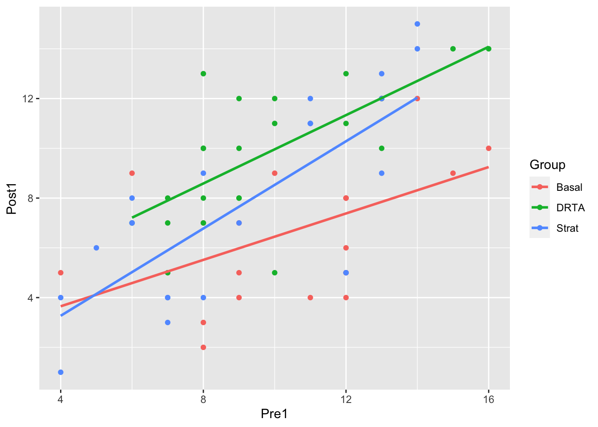

2 Linear models exercises
- For dependent variable \(Y\) and independent variable \(x\), which of the following are examples of linear models?
\(\quad Y_1= 2\theta + \psi + \varepsilon_1\)
\(\quad Y_2= \theta-\phi + 2\psi + \varepsilon_2\)
\(\quad Y_3= 2\phi + \varepsilon_3\)
\(Y=\beta_0+\beta_1 x + \beta_2 x^2+\varepsilon\).
\(Y=\beta_0+\beta_1 x^{-1}+\varepsilon\).
\(Y=\beta_0+\beta_1x^2e^{3x}+\varepsilon\).
\(Y=\beta_0(x_0+\beta_1x_1)+\varepsilon\).
\(Y=\beta_0/(1+\beta_1x)+\varepsilon\).
- At a Y-junction in an electrical circuit the true current flowing along \(AO\) towards \(O\) must equal the sum of the true currents flowing along \(OB\) and \(OC\) away from \(O\). The currents are measured (with error) through ammeters of the same accuracy, placed in \(AO\), \(OB\) and \(OC\), and observations \(y_1\), \(y_2\) and \(y_3\) recorded. Defining your notation carefully, write down a linear model to represent these data. Find the least squares estimates for the true values of the currents flowing through each of \(AO\), \(OB\) and \(OC\).
- Suppose that
\[
E(Y_i)=\left\{\begin{array}{ll}\mu_1 & i=1,2,\ldots,m,\\ \mu_2 & i=m+1,\ldots,m+n.\end{array}\right.
\]
- Find the least squares estimates of \(\mu_1\) and \(\mu_2\).
- Assuming that each \(Y_1,\ldots,Y_{m+n}\) are independent normally distributed random variables, each with variance \(\sigma^2\), write down the log-likelihood function for \(\mu_1,\mu_2,\sigma^2\) and obtain the maximum likelihood estimates of all three parameters.
- A linear regression model through the origin is given by
\[
Y_i = \beta x_i + \varepsilon_i,
\]
for \(i=1,\ldots,n\) and \(\varepsilon_1,\ldots,\varepsilon_n\stackrel{i.i.d}{\sim}N(0,\sigma^2)\)
- Find the least squares estimate of \(\beta\).
- Write down the log-likelihood function for \(\beta,\sigma^2\) and obtain the maximum likelihood estimates of these two parameters.
- For the two models in questions 2-4, write these models down in matrix notation, writing out the parameter vector and design matrix in full in each case, and verify that you get the same least squares estimates via the formula \(\hat{\boldsymbol{\beta}} = (X^TX)^{-1}X^T\mathbf{y}\).
- The 2000 US presidential election was narrowly won by Republican
candidate George W. Bush. Bush won the state of Florida with 567
more votes than the Democratic candidate Al Gore. Had Gore won
Florida, he would have won the presidency.
The dataset
florida.csvlists the votes for all candidates in each of the 67 counties in Florida. There was criticism of the ballot paper design, in particular, the “butterfly ballot” used in Palm Beach county, where it was claimed that some voters, intending to vote for Gore, mistakenly voted for the Reform candidate Pat Buchanan.- Buchanan and Bush were both conservative candidates, and so a relationship between votes cast for each candidate within each county would be expected. Fit a linear model to describe the relationship, with votes cast for Buchanan as the dependent variable and votes cast for Bush as the independent variable. Obtain the least squares estimates of your regression line parameters.
- Produce a scatter plot, annotated with your regression line and the observation from Palm Beach county.
- In an investigation into the relationship between annual
income and social class, social class is allocated to one of the
five ordered categories A, B, C, D, E.
- One investigator codes A, B, C, D, E as 1,2,3,4,5 respectively, and fits the regression \(E(Y_i) = \mu_i = \beta_0+\beta_1 x_i\), where \(Y_i\) is the income and \(x_i\) the coded social class. Explain the interpretation of \(\beta_1\).
- Another investigator thinks that A, B, C are more different than C, D, E and suggests using the codes 1,3,5,6,7 in the above regression. Interpret \(\beta_1\) in this case.
- A third investigator says that as social class is a categorical variable, one should use indicator variables, and fits the regression \(\mu_i=\alpha_0+\alpha_1 x_{i,1}+ \alpha_2x_{i,2}+\alpha_3 x_{i,3}+\alpha_4 x_{i,4}\) where \(x_{i,1}\) is an indicator variable for category A (i.e. \(x_{i,1}=1\) if observation \(i\) is from category A, and 0 otherwise), \(x_{i,2}\) for category B, \(x_{i,3}\) for category C, and \(x_{i,4}\) for category D. Interpret the \(\alpha\)’s in this case.
- A fourth investigator says that social class is a classification factor. The investigator fits the model \(\mu_i =\alpha_{[i]}\), where \([i]\) is the class to which the \(i\)-th observation belongs. Interpret the parameters in this case.
- Which model would you use?
- Consider the one-way ANOVA model
\[
Y_{ij}=\mu +\tau_i +\varepsilon_{ij},
\]
for \(i=1,2\) and \(j=1,2\) and \(\varepsilon_{ij}\sim N(0,\sigma^2)\).
- If \(\mu,\tau_1\) and \(\tau_2\) are unconstrained, write this model in matrix notation and obtain \(|X^TX|\). Can least squares estimates of \(\mu,\tau_1\) and \(\tau_2\) be obtained?
- If the constraint \(\tau_1+\tau_2=0\) is applied, write the model in matrix notation, and obtain least squares estimates of \(\mu\) and \(\tau_1\).
- The data frame
readingcontains data from a study of reading comprehension (which we analysed in the Semester 1 problems). To get this data, you will need to install therandomizationInferencepackage, and then use thedatacommand to load the data:
library(randomizationInference)
data(reading)
head(reading)## Subject Block Group Pre1 Post1 Diff1
## 1 1 1 Basal 4 5 1
## 2 2 1 Basal 6 9 3
## 3 3 1 Basal 9 5 -4
## 4 4 1 Basal 12 8 -4
## 5 5 1 Basal 16 10 -6
## 6 6 1 Basal 15 9 -6By fitting a single linear model, find the equations of the three fitted regression lines displayed below.
library(tidyverse)
ggplot(reading, aes(x= Pre1, y = Post1, colour = Group))+
geom_point()+
geom_smooth(method = "lm", se = FALSE)
- The dataset
dyslexia.csv1 contains the results from a dyslexia study on 34 children. The variables arebpvtis the score for each child on the British Picture Vocabulary Test (BPVT), taken when the children were 4 years old. This measures knowledge of vocabulary.radis the Reading Age Deficiency (RAD) for each child, measured when the children were 7 years old. This is defined as the Reading Age, as measured by a reading test, minus the chronological age, in months. A negative Reading Age Deficiency indicates potential dyslexia.
- Fit a simple linear regression model that can be used to predict RAD given BPVT.
- Make a scatter plot of the data with 95% point-wise prediction intervals for RAD, given BPVT. Comment on the effectiveness of predicting RAD for an individual child, given that child’s BPVT score.
the data were obtained in 2007 from http://stars.ac.uk, but this site is no longer available; the STEPS project (Statistical Education through Problem Solving was credited for providing the data.)↩︎